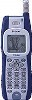

strange music page
* * * 2002.8
-2002.8.26 マヌケなマンガと電車
#会社の帰りがけに小田扉のマンガとか買って一生懸命マヌケな面して読みました。
渋谷(15p)→中目黒(42p)→自由が丘(73p)→武蔵小杉(112p)→綱島(139p)
って俺の家、元住吉。乗り過ごしちゃいました。あーあ。
でも久々にマンガ買ったんだけど、この人の面白いかも。黒田硫黄とかと似た感じの匂いなんですけど、もーちょいせつない感じ。
♪compostela
-2002.8.25 ニコタマヒラフジロック
#j-u-nさん一家主催の多摩川沿いで音楽を聴くイベントに行ってきました。
チャリンコでニコタマ目指して走って行って「この辺かな？」と思った所では皆様肉とかイカとかヤキソバとか焼いてました、会場が違いますね（川崎側行っちゃった）
まぁそんな訳で東京側、夏だか秋だかといった感じの風がとにかく気持ち良くまったーりととてもイイ感じで（酒も飲んでたし）、皆様のかける音楽を聴けました。
ドラえもんジャズとか、夕方の大友良英の風を集めてとか、夜のASTRO AGE STEEL ORCHESTRAとか、良かったな。
あ、実は自分もちょっとだけかけました。
なんて感じ、うわーこんなんで良かったのかな？寝ちゃいそうな感じ。まぁいいや。
夜はsasakidelicさんと山下さんとクレイジートニーさんとかと酒飲んでました。えーとなんつーか、ちょっとヤヴァイかったよーな。昼と夜のコントラストが有りすぎな感じで。本性出たっていうか。
♪Antonio Carlos Jobim/Wave
-2002.8.24 R691i

#携帯変えました、R691iに。もー都内で見かけなくなった機種だけどたまたま出張先の熊谷駅前にて。
なんかこないだ道歩いてる人が持ってて急に欲しくなったんすよね、衝動買い。
(ちなみに前までJ-DN03でした、ピンクじゃないけど。その前がJ-DN02その前がJ-DN01)
DoCoMo端末って非常に使いにくいんですけど、きっと多分その内に慣れるでしょう。あ、着メロ3和音だってさ、すげぇ。
-2002.8.18 夏の短編
#遊んでました。横浜とか箱根とか行ってて。
箱根の山道とか車でグルグル回ってると夏休みなよーな気がしてきてて楽しいです。いつ頃までこんな感覚持っていられるんだろ？
あ、横浜で町田町蔵FROM至福団/どてらい奴らを中古で買いました、町田町蔵(INU)と山崎春美(TACO)と北田昌宏(INU,After Dinner)なんですけど、音的には小西健司(4D,P-Model)のエレクトロビートが効いててかっちょいいです。カセットブックには山崎春美によるえらい80年代らしい意味不明ブックレット付だったらしいです、見てみたいな。
♪渡辺満里奈/夏の短編
-2002.8.15 don't worry be happy
#あさがた八王子から渋谷に戻って延滞3日目のCDを返却(\630)して外に出たら渋谷の十字路で右翼が演説してました。終戦記念日なんですね。
で、今日は最近こっちに引っ越してきた友達の家行ってホームセンターで買い物とかしてました。彼の場合大学卒業してからしばらっく中南米方面をバックパッカーしてて、帰ってきたかと思ったら今度は西アフリカとヨーロッパをバックパッカーして。まぁそのそーゆーヤツな訳ですけど。
いろんな国の写真見せてもらったら懲りもせずまた旅行行きたくなってきました。ボスニアとかのNATOに誤爆されちゃった中国大使館とか。アフリカのがきんちょとか、アフリカいいなぁ。
見事に何も無い部屋は、無駄なもの溜めこむ習性の有る自分から見ると尊敬に値します。ジャンベの教習ビデオ見ながらモロッコのカセットテープを聴いたりしてて。
そいつがチェコかどっかで買ったジャズのカセットテープの中に "Bobby McFerrin/Don't worry be happy" (元気が出るテレビのはじめての告白の曲)とか入ってて、ど真ん中ストレートで来たらしいです。 確かに旅行中にたまたまこんなの聴いちゃったらヤバイと思う。
結局ちょっと酒飲んで(またかよ)、ラーメン食って、「人生どーにかなるでしょ」とか結論付けて帰ってきました。
♪cluster & eno
-2002.8.14 あぁもう
#ちょっと色々。酒飲んで。大変。ここには書けないから書かないけど。
気付いたら住基ネットの番号来てました、奇数が多いな俺。
なんだかQ&A付いてます、ちょっと読んでみよう。
| Q1. | 住民票コードとは？（なぜコードが必要なのか？） |
A | 住民票コードは、住民登録される皆様の住民票に記載されるランダムな11桁の番号で、個人を特定する情報は含まれません。 |
| | 住民票コードは、本人確認情報をはじめとする情報を適切かつ正確に行うために必要です。 |
だってさ。
♪micro blue
-2002.8.12 水の中？
 #そうそう、昨日はほんとは上野行った後に友達にチケット余ったって言われて代々木の体育館にUAとスガシカオとYUKIとかを見に行ってました。それはまた今度書くとして、その後に友達に付き合わされたタワレコでGutevolk/グーテフォルクは水の中っての買っちゃいました。メロディーが魅力的な感じの女性エレクトロ、短いけど3曲目がとても好きです。サイダーの瓶の中をゆっくり落っこちてくビー玉みたいな感じがします。
#そうそう、昨日はほんとは上野行った後に友達にチケット余ったって言われて代々木の体育館にUAとスガシカオとYUKIとかを見に行ってました。それはまた今度書くとして、その後に友達に付き合わされたタワレコでGutevolk/グーテフォルクは水の中っての買っちゃいました。メロディーが魅力的な感じの女性エレクトロ、短いけど3曲目がとても好きです。サイダーの瓶の中をゆっくり落っこちてくビー玉みたいな感じがします。
♪gutevolk/rainy dragoon
-2002.8.11 そーいえば
#上野の都美術館に親父絡みの「平和美術展」ってのを見に行きました。被爆者肖像画とか色々と。
自分らの世代だと戦争なんて「お話」の世界で、実感ゼロなんだけど。思い出したのが去年の夏にパキスタンとかで入院してた時BBCばっかり見てて、 (他のチャンネルはほとんどウルドゥー語で意味不明) 「わー、世の中全然平和じゃないじゃん」とか思って。日本のテレビみてると全然情報入ってこないけど、あっちのテレビだとイスラエルのテロとか北インドの紛争とかのニュースが多くて。
どーなんだろう？みんな世の中平和だと思ってるのかな？アフガンとかNYのテロ以上の死者が出てるわけでしょ？
自分もそうだけど、色んなことをすぐ忘れちゃうから。とりあえず思い出した時に書きとめておきます。
♪gutevolk/the humming of tiny people
-2002.8.7 ○ (快晴)
#暑いのは嫌いじゃ無いみたいで、なんかこージリジリ焼けるよな感じの日差しの下とか居るとボーっとしてきてちょっと気持ち良くなってきて。会社の近くの公園の草刈った後の匂いとか、夏っぽいじゃん。
こないだのフジロックで格好良かった四人囃子の1973年のライヴ盤をゲットしました。スタジオ盤の数倍カッチョイイじゃないかと思いました。イエスとピンクフロイドを無理矢理足して割ったらこんな感じになるのかな？こーゆー洗練されてないのがかっこいいバンドって中々無いですね。
あと近所の中古屋でHatfield and the North/LIVE 1990を....こっちはイマイチだったかも。
♪'73 四人囃子
-2002.8.3 でっかい花火がきれいだな
#江戸川の花火行ってきました。なんか今年は日本の夏らしい事してます。
あとはスイカ割りプールと海と流しそうめんか、やんねーか。
♪cornelius/fantasma